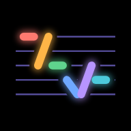

唱学粤语
完成
六个声调 ·
si
换一组
我的歌
选择
删除（0）
撤销
导入新歌
音频 + 歌词
1 · 音频文件
选择音频
mp3 或 m4a。音乐 App 下载的加密文件不能用。
2 · 歌名和歌手
3 · 歌词
在线搜索歌词
选择 .lrc 文件
打轴
每句歌词开始唱时，点一下大按钮
0:00
0:00
播放
撤销
第 1 句开始
粤拼 开
设为正在学
编辑歌曲
词汇包
删除
0:00
0:00
1×
编辑歌曲
保存
歌名和歌手
音频
更换音频
换音频时歌词、时间轴和学习进度都保留。
整首歌一起挪
歌词整体比歌声早或晚时用
−
0.0s
+
0:00
0:00
设置
学习
每天新学几句
−
句
+
我的生词
外观
皮肤
数据
导出备份文件
从文件恢复
建议添加到主屏幕使用，数据更不容易丢失
关于
版本记录
兑换码
我的生词
全选
选择
完成
标为认识
取消认识
删除
撤销
打卡日历
皮肤
皮肤只改变颜色，学习进度和设置都不受影响。
兑换码
兑换
兑换码可以解锁皮肤。不区分大小写，空格和连字符可以不输。
词汇包
开发者模式
版本记录
＋ 导入新歌
保存
调试面板
收起